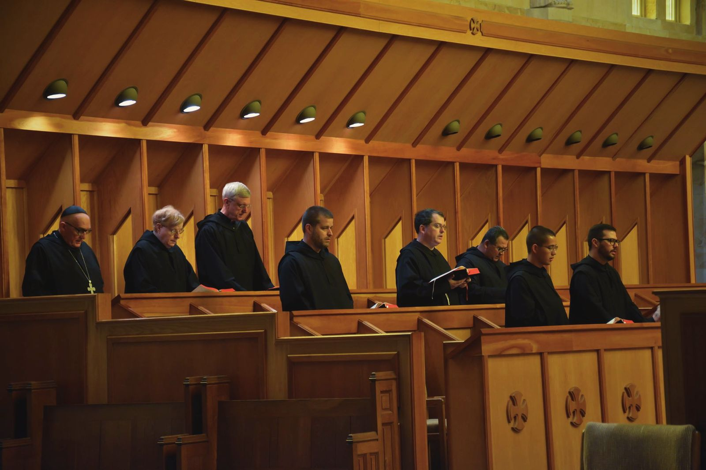
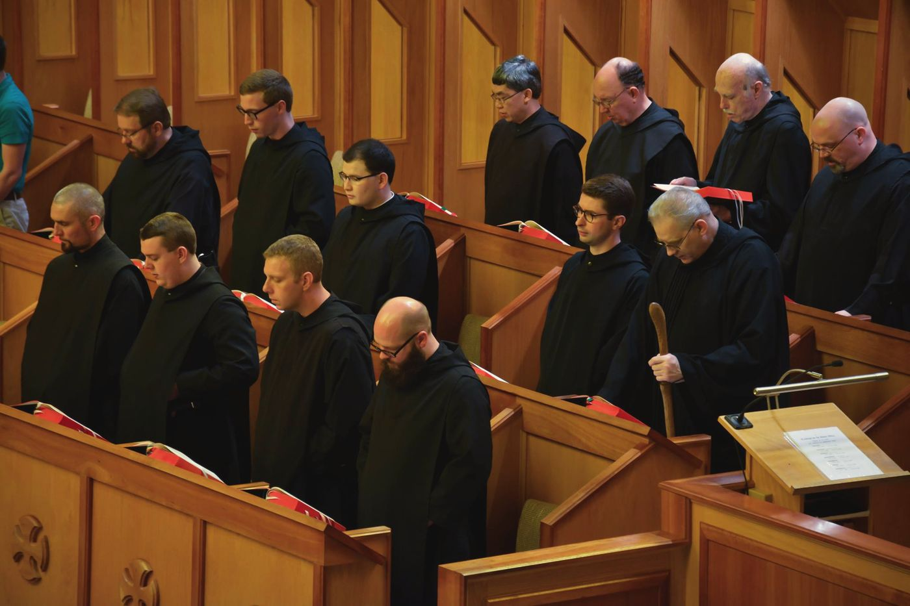

Pray with Us
The church is open.
Come and pray.
Five times a day the bell calls the monks to choir. Anyone may come and pray with them.
“Let nothing be preferred to the Work of God.” So St. Benedict wrote in his Rule (chapter 43), and so the day at St. Bernard is built around the Divine Office, the psalms sung in common, and the Mass. Guests are welcome at all of it. Come as you are, sit in the nave, and pray as much or as little as you like: listen, follow along, or simply rest in the quiet.
Before you come
Where are you starting from?
Pick the door that fits you. There are no wrong answers.
You don't have to believe anything to pray with us.
No one will ask what you believe. There's nothing to join and nothing to sign. Sit in the pews, sing along, or simply listen. The monks sing very old words that shepherds and kings, prisoners and exiles have prayed: full of joy and anger, fear and thanks. Every human feeling is in there somewhere.
“You have made us for yourself, and our heart is restless until it rests in you.”St. Augustine, who ran from faith for years, Confessions 1.1
No one can prove to you that these words are sacred. We invite you to try them. When one of Jesus' first followers scoffed, his friend didn't argue. He just said, “Come and see” (John 1:46).
Have you ever heard monks chant?
It's simpler than you might think, and very peaceful: mostly psalms, sung back and forth, and a good deal of silence.
In person is different. You hear the breath, the stone, the silence between verses.
Then you know the feeling. Come and feel it again.
One question before anything else: do you believe the Psalms are the inspired, God-breathed word of God?
So do we. The Psalms are holy ground we share.
Thank you for being honest. We believe they are, and you are just as welcome to pray them with us.
Thank you for being honest. We believe they are, and you are just as welcome to pray them with us.
Jesus prayed the Psalms all his life, even on the cross: “My God, my God, why have you forsaken me?” (Matthew 27:46, quoting Psalm 22). Christians are divided, and the world is more divided still. So for a little while, let's set our divisions aside and simply sing to God together. You don't need to be Catholic, and you don't need to ask anyone. Just come in and sit in the pews.
An honest note: besides the Psalms you will hear hymns, Bible readings and prayers for the world, and also hymns to Mary and prayers honoring the saints. If you disagree with those parts, you don't have to sing them. Stay silent and pray to God in your own words.
Did you know? Protestants can become Benedictine oblates: Christians who join their prayer to a monastery's and follow the Rule of St. Benedict in ordinary life. Some of our own oblates are Protestant.
Do you feel called to go deeper in prayer?
Thanks be to God. That call is his, and he will help you answer it.
A small “maybe” is often how it starts. Let's take one step together.
That's an honest answer. Read on, and see if something stirs.
When the monks sing the Psalms, they are not praying alone. The Second Vatican Council taught that Christ “joins the entire community of mankind to Himself, associating it with His own singing of this canticle of divine praise” (Sacrosanctum Concilium 83). The Office stretches the praise of the Mass across the day; the Catechism calls it “like an extension of the Eucharistic celebration” (no. 1178).
And it isn't only for monks. The Liturgy of the Hours “is intended to become the prayer of the whole People of God,” and “the laity, too, are encouraged to recite the divine office” (CCC 1175).
Have you prayed the Liturgy of the Hours before?
Then this is a beautiful place to begin. You don't need a book or any experience. Just come.
Praying it with a choir is different from praying it alone. Come hear it sung.
Then you're already praying with us. Come and pray it with us in person. (Our monastic book is arranged differently from the four-volume breviary, and uses the older psalm numbers.)
Whoever you are: try talking with God in the Psalms, the way one of our monks does.
The schedule
When the monks pray
In the Abbey Church, Central time.
Monday to Friday
| Matins & Lauds | 6:00 a.m. |
|---|---|
| Sext | 11:55 a.m. |
| Mass | 5:00 p.m. |
| Vespers | 5:30 p.m. |
| Compline | 7:15 p.m.* |
* Compline is not public on Wednesdays.
Saturday
| Matins & Lauds | 6:00 a.m. |
|---|---|
| Sext | 10:45 a.m. |
| Mass | 11:00 a.m. |
| Vespers | 5:30 p.m. |
| Compline | 7:15 p.m. |
Sunday
| Matins & Lauds | 7:00 a.m. |
|---|---|
| Sext | 10:00 a.m. |
| Mass | 10:30 a.m. |
| Solemn Vespers | 5:30 p.m. |
| Compline | not public |
The schedule can change, especially on major feasts and school occasions. If you are coming from far away, call the monastery first: 256-734-8291.
The Abbey Church
Plain stone outside, soaring arches within
From the lawn the Abbey Church is a plain, square block of golden sandstone, its face a stone lattice, with an open bell tower standing apart. Step inside and tall pointed arches of the same stone rise one after another down the nave, and between them the saints, carved larger than life, keep watch over the choir.
The stone is our own: the church is built of native sandstone quarried on the monastery grounds. It was finished in 1964, the crown of Abbot Bede Luibel's building campaign. His death notice remembers “the single-mindedness with which he was determined that St. Bernard have a proper abbey church,” and adds, “it is impossible to capture the full flavor of the struggle that entailed.”
The statues were carved by Herbert Jogerst, a German sculptor who had come to America as a prisoner of war and later carved for St. Meinrad Archabbey in Indiana. A young monk, Br. Jude Johnston, was his apprentice and went on to a life as an artist.


The Great Cross
Over the altar hangs a painted crucifix, a “hanging rood”, by the Kentucky liturgical artist Gloria Thomas: solid wood, outlined in gold, with “a strong sense of medieval spirit”. It weighs nearly four hundred pounds and hangs from the vault on aircraft cable, raised and lowered by two men at winches in the attic. In 2024, after more than twenty years over the altar, it was taken down, cleaned of mould and varnished by Gary Chapman, a painter and professor at UAB, and raised again.
Saints in the stone
Look for St. Benedict, holding his Rule open at its first words: Ausculta, o fili, “Listen, my son.” The church also keeps the abbey's relics of more than a hundred saints.
See the relics

Sources: Alabama Department of Archives and History; the abbey Necrology; the Cullman Tribune (2023, 2025); CNHI (2024). Photos: Anne Stephens.
The Divine Office
The psalms, sung through the day
The Office is made mostly of the 150 psalms, the prayers Our Lord himself prayed. Every human feeling is in them: joy and grief, fear and anger, praise, thanks and sorrow for sin. The monks sing them on behalf of themselves and of the whole world, and the short readings, often the same from day to day, sink in until they are known by heart.
Matins and Lauds open the day while it is still dark; Vespers closes it as the light fades. They are the two “hinges” of the day. Sext stops the work at noon, and Compline commends the night to God.

The hours
What happens at each
Matins
After the night's “Grand Silence”, the first words of the day: “O Lord, open my lips, and my mouth shall proclaim your praise.” Psalms, then two longer readings, one from Scripture and one from the Fathers of the Church, each followed by silence.
Lauds
Morning praise as the sun comes up, every sunrise a little Easter. It rises to the Benedictus, the song of Zechariah, and ends with the Our Father, given out by the abbot.
Sext
At midday the monks leave their work and go to church. The hour recalls the time when Our Lord was put on the cross, at the height of the day's heat and work.
Mass
The heart of the day. Christ's own sacrifice, offered for the Church and for the world, and for the intentions people send us.
Vespers
Evening praise and thanks for the day, rising to the Magnificat, Mary's song. On Sundays it is sung solemnly.
Compline
St. Benedict's own night prayer: an examination of conscience, a few quiet psalms and the hymn to Our Lady. Afterward the abbot blesses each monk with holy water, and silence falls until morning.
Lectio divina
Pray with Scripture as the monks do
Between Lauds and breakfast most of the monks spend their time in lectio divina, “divine reading”: slow, prayerful reading of Scripture. You can do it anywhere. Take a short passage, perhaps next Sunday's Gospel or a few verses of a psalm, find a quiet place, and go through four steps:
Read the passage slowly, more than once, until a word or a phrase stands out. Ponder it: what is it saying to you, today? Pray: speak to God about it, plainly, in your own words. Rest: be still in his presence, without needing to say anything more.
One monk's conversations with God
What kind of day are you having?
One of our monks prays the Psalms like a phone call. He hears one verse as his own voice and the next as God answering him. Some days the call is sorrowful, some days full of joy. Tap the word that fits today, and he will show you how one of his calls began.
A sorrowful call
Psalm 102 (101)
Interceding for the dying
O Lord, listen to my prayer
Psalm 102 (101):2
and let my cry for help reach you.
I hear God say I'm listening to your prayer. Your cry has reached me. What do you ask of me?
Do not hide your face from me
Psalm 102 (101):3
in the day of my distress.
Turn your ear towards me
and answer me quickly when I call.
I pray You did not hide your face from me when I was in distress. Now others are in distress, and I want to pray for them.
A joyful call
Psalm 92 (91)
Our community prays this psalm at Lauds on Saturday morning.
It is good to give thanks to the Lord,
Psalm 92 (91):2
to make music to your name, O Most High,
I hear God say It is good to give thanks to me, and to make music to my name. I am the Most High.
to proclaim your love in the morning
Psalm 92 (91):3
and your truth in the watches of the night,
I pray Then I will proclaim your love this morning, and your truth again tonight.
An honest call
Psalm 38 (37)
On a gloomy day, for no good reason. This was the first psalm I prayed this way.
My wounds are foul and festering,
Psalm 38 (37):6
the result of my own folly.
I pray Lord, I'm gloomy today, and I don't even know why. I can't see any of the good things you've given me.
I am bowed and brought to my knees.
Psalm 38 (37):7
I go mourning all the day long.
I hear God say I see you, my son, bent low before me, carrying this heaviness from morning to night. I am the Good Physician, and I'm going to help you get better.
A gloomy mood isn't always ingratitude. Sometimes it is an illness, and that is neither a sin nor a sign of holiness. If sadness won't lift, please talk to a doctor or counselor as well as a priest. The Psalms can keep you company on that road too.
When your own heart talks back
Psalm 42 (41)
Like the deer that yearns
Psalm 42 (41):2
for running streams,
so my soul is yearning
for you, my God.
I pray Lord, I'm dry inside. I want you the way a worn-out animal wants water.
My tears have become my bread,
Psalm 42 (41):4
by night, by day,
as I hear it said all the day long:
“Where is your God?”
I hear God say I see every tear, my son. People ask where I am, and some nights you ask it too. I am right here, closer to you than you are to yourself.
A call God finishes
Psalm 91 (90)
… says to the Lord: “My refuge,
Psalm 91 (90):2
my stronghold, my God in whom I trust!”
I pray You are my safe place, Lord. I'm putting my whole weight on you.
When he calls I shall answer: “I am with you,”
Psalm 91 (90):15
I will save him in distress and give him glory.
I hear God say Call me, and I'll pick up. Whatever trouble comes, you won't face it alone. I'm here right now, my son.
For anxious days
Psalm 46 (45)
God is for us a refuge and strength,
Psalm 46 (45):2
a helper close at hand, in time of distress,
I pray Lord, I need you close today. Everything feels unsteady.
so we shall not fear though the earth should rock,
Psalm 46 (45):3
though the mountains fall into the depths of the sea;
I hear God say Even if everything you lean on gives way, I won't. Don't be afraid.
Confession, and the answer
Psalm 32 (31)
I kept it secret and my frame was wasted.
Psalm 32 (31):3
I groaned all day long,
I pray Lord, I hid it for so long. It ate away at me, day and night.
But now I have acknowledged my sins;
Psalm 32 (31):5
my guilt I did not hide.
I said: “I will confess
my offense to the Lord.”
And you, Lord, have forgiven
the guilt of my sin.
I hear God say And the moment you told me, it was gone. No waiting room. No file.
When you're afraid God is keeping score
Psalm 130 (129)
If you, O Lord, should mark our guilt,
Psalm 130 (129):3
Lord, who would survive?
I pray Lord, if you're keeping score, I'm finished.
But with you is found forgiveness:
Psalm 130 (129):4
for this we revere you.
I hear God say I'm not keeping score. I'm forgiving. That's who I am.
The little way
Psalm 131 (130)
O Lord, my heart is not proud
Psalm 131 (130):1
nor haughty my eyes.
I have not gone after things too great
nor marvels beyond me.
I pray Lord, I'm done trying to be big. I don't have to understand everything.
Truly I have set my soul
Psalm 131 (130):2
in silence and peace.
A weaned child on its mother’s breast,
even so is my soul.
I hear God say Then come here and be quiet with me. Rest, like a little one asleep in its mother's arms.
A grateful call
Psalm 116 (115 in the older numbering, which splits this psalm in two)
How can I repay the Lord
Psalm 116 (115):12
for his goodness to me?
I pray Lord, you've given me so much. What could I ever give you back?
The cup of salvation I will raise;
Psalm 116 (115):13
I will call on the Lord’s name.
I hear God say Just lift the cup I'm handing you, and call me by name.
A call to praise
Psalm 147 (146)
Our community prays this psalm at Vespers on Saturday evening.
Praise the Lord for he is good;
Psalm 147 (146):1
sing to our God for he is loving:
to him our praise is due.
I hear God say Little one, I am the deepest reality there is. Know, deep down, that I am good. When you praise me, you say yes to what is most real. That is why something in you will always want to sing, even when you suffer.
The Lord builds up Jerusalem
Psalm 147 (146):2
and brings back Israel’s exiles,
I pray Truly, you build me up. You are building your Church, the new Jerusalem. I am an exile and a pilgrim, but I am on my way home, and every minute brings me closer to you.
Two voices in one verse
Psalm 27 (26)
O Lord, hear my voice when I call;
Psalm 27 (26):7
have mercy and answer.
I pray Lord, are you there? Please answer me.
Of you my heart has spoken:
Psalm 27 (26):8a
“Seek his face.”
I hear God say I'm the one who put that longing in your heart. Come closer. Look for me.
These are one monk's personal meditations, not Church teaching; the psalm text is never changed. Psalm numbers: most Bibles first, our choir book in parentheses. Psalm text: the Grail translation, which our choir sings, © 1963 The Grail (England). All the meditations · Tips for when prayer is hard · The saints on prayer
Let us pray for you
Send us your intentions
The monks pray every day for the people who ask for their prayers. You can ask one of our priests to offer Mass for someone living or dead. There is a customary offering, but it is never required.